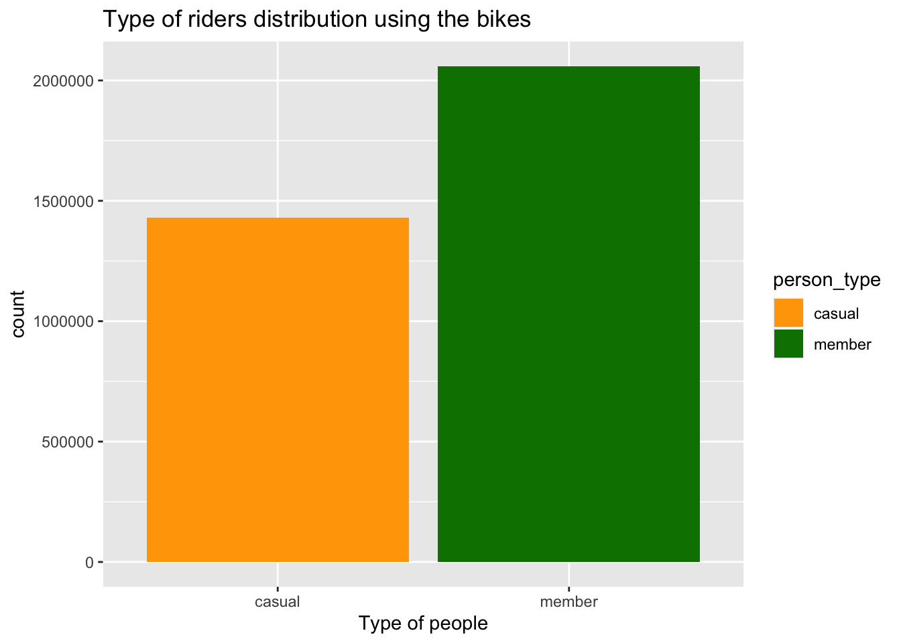
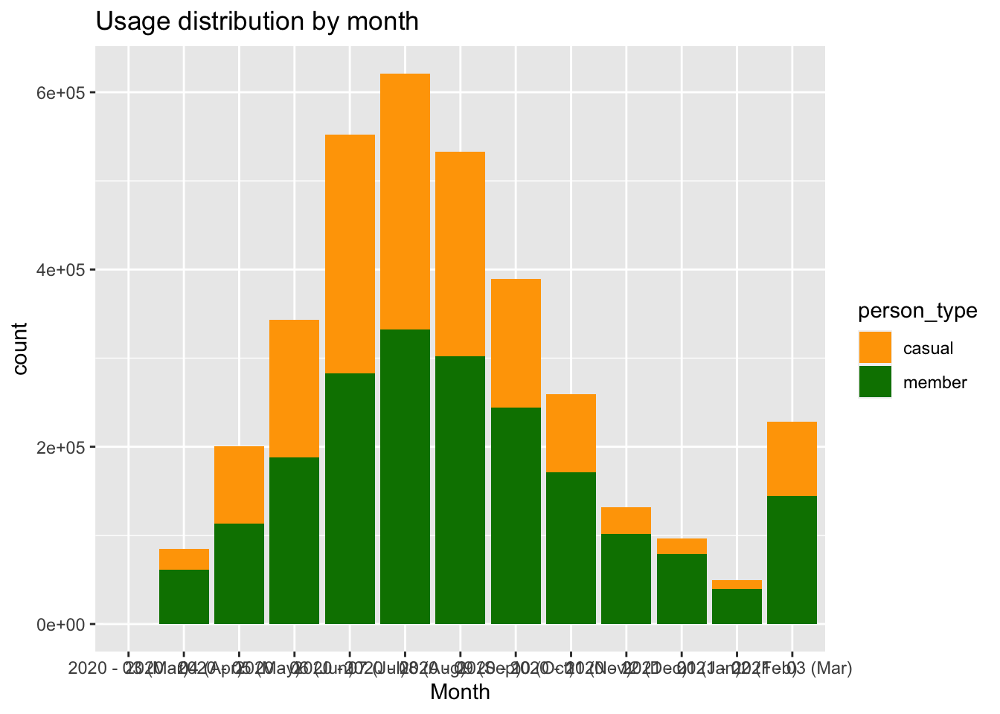
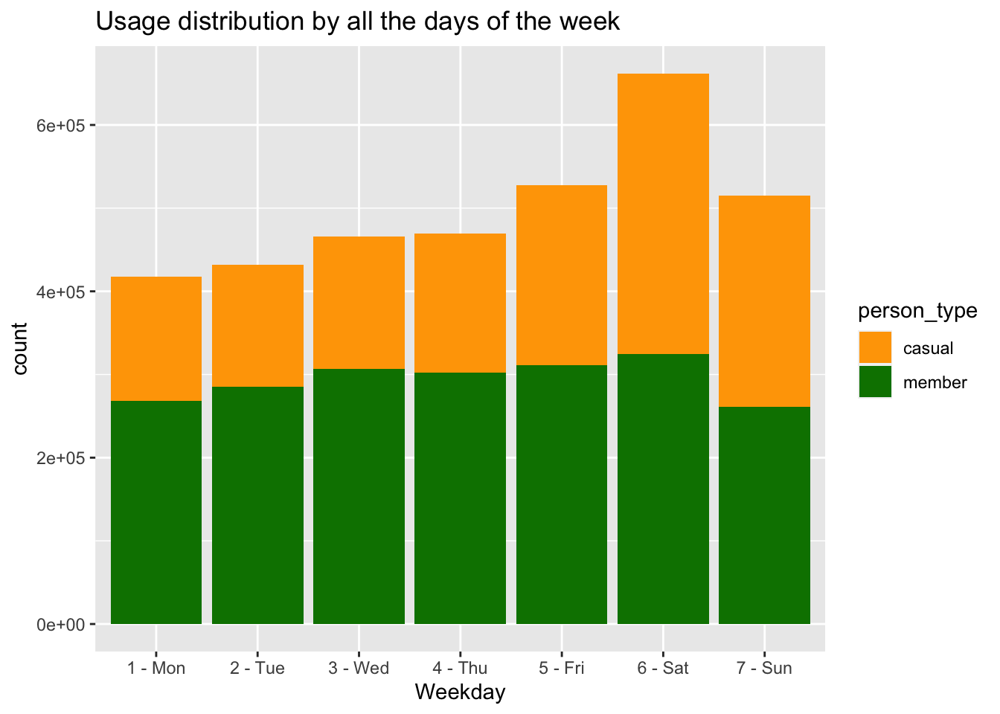
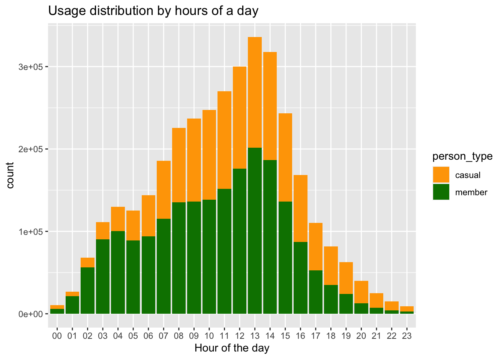
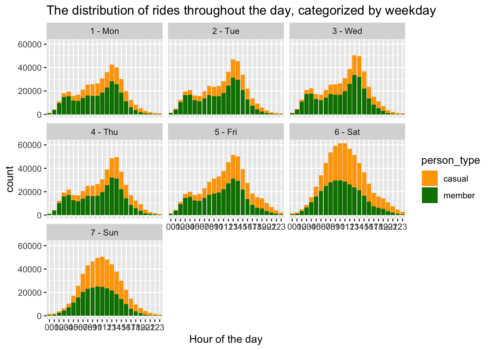
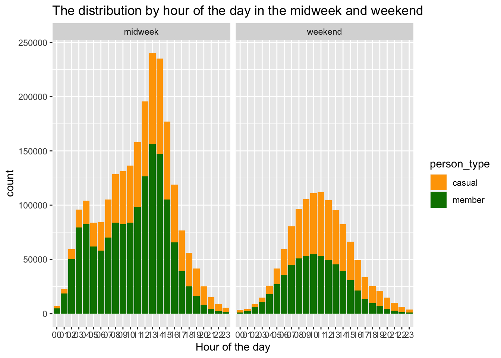
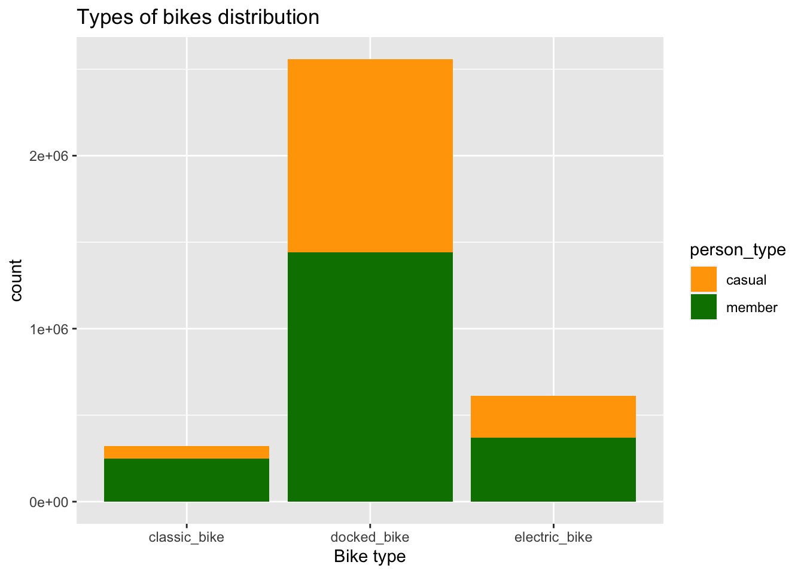
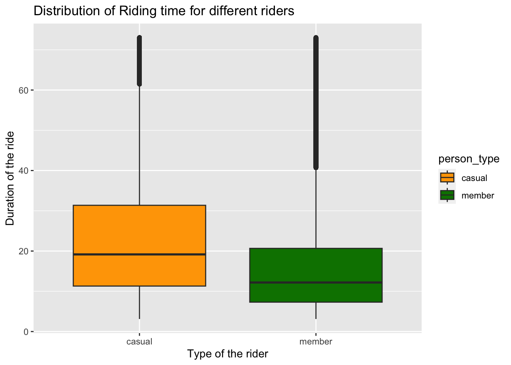
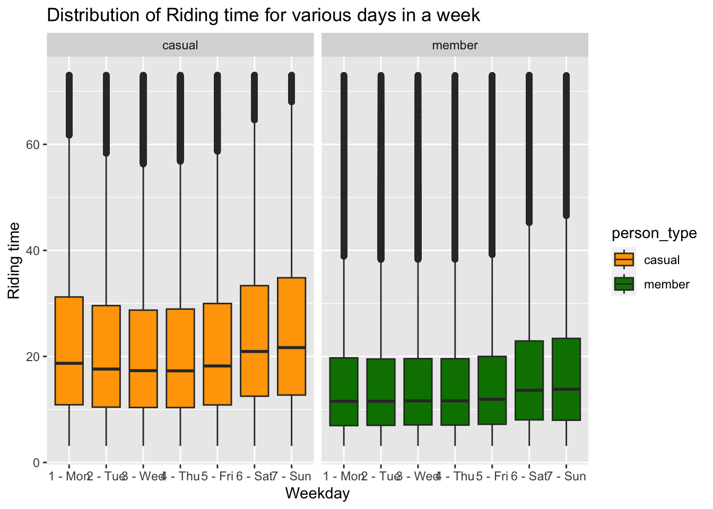

library(tidyverse)
knitr::opts_chunk$set(echo = TRUE, warning=FALSE, message=FALSE)Final Project: Jaswanth Reddy Kommuru
final_Project
Final Project
Part 1. Introduction
Project Topic: The goal of this project is to analyze bike usage patterns by exploring various attributes extracted from the dataset, including bike locations and the start and end times of rides.
General Research Question: The objective of this project is to examine the utilization of Divvy bikes in the Chicago city and provide extensive insights regarding the busier and slower times of the usage of bikes using different metrics of the time duration like hours, days, weeks and months along with this the usage made by different riders like a subscriber/member or a casual person.
Dataset Description: The project utilizes the well-regarded Bike rides dataset as an invaluable asset for data analysis. This dataset, provided by Divvy, showcases the bike share system that operates in Chicago and Evanston. Divvy’s public release of this dataset allows people to access it and gain insights, while also highlighting how the bike share system enhances transportation options for residents and visitors. This system from Divvy offers an affordable and enjoyable way to explore the city of Chicago conveniently.
Unit of Analysis: Each row in the Bike ride dataset represents a distinct ride and its associated attributes, such as starting station, ending station, starting time of the ride, ending time of the ride, and some other attributes. The dataset contains information of 3,489,539 rides.
The project’s goal is to look into the relationships between many elements, such as the type of rider, the length of the ride, and other elements. We intend to gather insightful knowledge into bike usage patterns among various user categories, as well as variances between days of the week and months, by a thorough analysis of this dataset. In order to help the company increase profitability and make wise judgments about the distribution of different bike types based on customer preferences, we investigate the effects of numerous ride-related variables.
Part 2. Background of the Topic/Literature Review
The Chicago city has the bike share system which is introduced as an alternative commute way and which would also help the tourists to commute for a few days. Divvy is the company name which is managing the bikes and the application and they have kept some data for public access. By analyzing the attributes mentioned for each ride in the dataset we can gain valuable insights like usage of the bike on different days by different types of people like the members or the casual people. Analyzing this data helps the company to get the insights about the bikes usage at various duration of the week or month.
Part 3. Dataset Introduction
In the Ride dataset, each row corresponds to a specific ride and contains multiple pieces of information. The dataset encompasses a distinctive identifier, known as “ride_id,” assigned to uniquely identify the details of all 3,489,539 rides. Additionally, the dataset captures data on the starting and ending stations, denoted by “start_station_name” and “end_station_name,” respectively. There are a total of 709 stations where bikes are picked up and returned. Moreover, the dataset includes geographical information, such as the latitude and longitude coordinates, for both the starting and ending bike stations, referred to as “start_lat,” “start_lng,” “end_lat,” and “end_lng.” Each station is also assigned a unique identifier, namely “start_station_id” and “end_station_id.” The dataset further accounts for three types of bikes, referred to as “rideable_type,” which are available for rides and their availability is dependent on the specific bike type. The individuals utilizing the bikes are categorized into two distinct groups based on their membership status, represented by the field “member_casual.” This field indicates whether the person is a member with an active subscription plan or a casual member who typically pays for each ride individually.
Part 4. Dataset Description
(Story) This dataset contains a total of 3,489,539 rows and 13 columns and the descriptive information about what each of the 13 fields are given below :
- ride_id: A unique identifier for each ride.
- rideable_type: The type of bike used for the ride (e.g., docked_bike).
- started_at: The date and time when the ride started.
- ended_at: The date and time when the ride ended.
- start_station_name: The name of the starting station for the ride.
- start_station_id: The identifier of the starting station.
- end_station_name: The name of the ending station for the ride.
- end_station_id: The identifier of the ending station.
- start_lat: The latitude coordinate of the starting station.
- start_lng: The longitude coordinate of the starting station.
- end_lat: The latitude coordinate of the ending station.
- end_lng: The longitude coordinate of the ending station.
- member_casual: Indicates whether the rider is a member or a casual user.
Coding Component:
- Read and merged all the csv files in the dataset:
# Get a list of all CSV files in the specified directory and its subdirectories.
all_csvfiles <- list.files(path = "/Users/jaswanth/Documents/601/JaswanthReddyKommuru_FinalProjectData", recursive = TRUE, full.names = TRUE)
# Read and merge all the CSV files into a single data frame.
mergred_ride_data <- do.call(rbind, lapply(all_csvfiles, read.csv))- Pre-processing the data:
# Update the column name at index 13 to "person_type"
colnames(mergred_ride_data)[13] <- "person_type"
# Modify the column name at index 2 to "bike_type"
colnames(mergred_ride_data)[2] <- "bike_type"# Remove duplicate rows based on the "ride_id" column
no_duplicate_rides <- mergred_ride_data[!duplicated(mergred_ride_data$ride_id), ]
# Calculate the number of duplicate rows that have been removed and printing it
print(paste(nrow(mergred_ride_data) - nrow(no_duplicate_rides), "duplicate rows have been removed."))[1] "209 duplicate rows have been removed."# Convert the "started_at" column to POSIXct format
no_duplicate_rides$started_at <- as.POSIXct(no_duplicate_rides$started_at, "%Y-%m-%d %H:%M:%S")
# Convert the "ended_at" column to POSIXct format
no_duplicate_rides$ended_at <- as.POSIXct(no_duplicate_rides$ended_at, "%Y-%m-%d %H:%M:%S")# Add a new column to the "data_no_duplicates" data frame called "duration_of_ride"
no_duplicate_rides <- no_duplicate_rides %>%
mutate(duration_of_ride = as.numeric(no_duplicate_rides$ended_at - no_duplicate_rides$started_at) / 60)
head(no_duplicate_rides)# Generate a summary of the "duration_of_ride" column in the "data_no_duplicates" data frame
mean(no_duplicate_rides$duration_of_ride)[1] 26.48087median(no_duplicate_rides$duration_of_ride)[1] 14.51667# Add a new column "year_month" to the no_duplicate_rides data frame
no_duplicate_rides <- no_duplicate_rides %>%
mutate(year_month = paste(strftime(no_duplicate_rides$started_at, "%Y"),
"-",
strftime(no_duplicate_rides$started_at, "%m"),
paste("(",strftime(no_duplicate_rides$started_at, "%b"), ")", sep="")))
# Get the unique values of the "year_month" column
unique(no_duplicate_rides$year_month) [1] "2020 - 04 (Apr)" "2020 - 03 (Mar)" "2020 - 05 (May)" "2020 - 06 (Jun)"
[5] "2020 - 07 (Jul)" "2020 - 08 (Aug)" "2020 - 09 (Sep)" "2020 - 10 (Oct)"
[9] "2020 - 11 (Nov)" "2020 - 12 (Dec)" "2021 - 01 (Jan)" "2021 - 02 (Feb)"
[13] "2021 - 03 (Mar)"# Add a new column "day_of_the_week" to the no_duplicate_rides data frame
no_duplicate_rides <- no_duplicate_rides %>%
mutate(day_ofthe_week = paste(strftime(no_duplicate_rides$ended_at, "%u"), "-", strftime(no_duplicate_rides$ended_at, "%a")))
# Get the unique values of the "day_of_the_week" column
unique(no_duplicate_rides$day_ofthe_week)[1] "7 - Sun" "5 - Fri" "3 - Wed" "2 - Tue" "6 - Sat" "4 - Thu" "1 - Mon"# Add a new column "hour_ride_started" to the no_duplicate_rides data frame
no_duplicate_rides <- no_duplicate_rides %>%
mutate(hour_ride_started = strftime(no_duplicate_rides$ended_at, "%H"))
# Get the unique values of the "hour_ride_started" column
unique(no_duplicate_rides$hour_ride_started) [1] "14" "13" "09" "07" "10" "06" "11" "12" "23" "08" "05" "04" "16" "15" "17"
[16] "19" "03" "18" "02" "21" "01" "20" "22" "00"Descriptive information and summary of the ride dataset :
::: {.cell}
# Checking the dimensions of the data dim(no_duplicate_rides)::: {.cell-output .cell-output-stdout}
[1] 3489539 17:::# checking the unique person types and count of them length(unique(no_duplicate_rides$person_type))::: {.cell-output .cell-output-stdout}
[1] 2:::unique(no_duplicate_rides$person_type)::: {.cell-output .cell-output-stdout}
[1] "member" "casual":::# checking the unique bike types and count of them length(unique(no_duplicate_rides$bike_type))::: {.cell-output .cell-output-stdout}
[1] 3:::unique(no_duplicate_rides$bike_type)::: {.cell-output .cell-output-stdout}
[1] "docked_bike" "electric_bike" "classic_bike":::#printing out the first 6 rows of the dataset. head(no_duplicate_rides)::: {.cell-output-display}
:::
#printing out the last 6 rows of the dataet. tail(no_duplicate_rides)::: {.cell-output-display}
::: :::
# Generate a summary of the no_duplicate_rides data frame
summary(no_duplicate_rides) ride_id bike_type started_at
Length:3489539 Length:3489539 Min. :2020-04-01 00:00:30.00
Class :character Class :character 1st Qu.:2020-07-14 19:36:28.00
Mode :character Mode :character Median :2020-08-29 14:47:30.00
Mean :2020-09-10 01:13:26.91
3rd Qu.:2020-10-20 18:07:35.50
Max. :2021-03-31 23:59:08.00
ended_at start_station_name start_station_id
Min. :2020-04-01 00:10:45.00 Length:3489539 Length:3489539
1st Qu.:2020-07-14 20:11:10.50 Class :character Class :character
Median :2020-08-29 15:18:24.00 Mode :character Mode :character
Mean :2020-09-10 01:39:55.75
3rd Qu.:2020-10-20 18:21:47.00
Max. :2021-04-06 11:00:11.00
end_station_name end_station_id start_lat start_lng
Length:3489539 Length:3489539 Min. :41.64 Min. :-87.87
Class :character Class :character 1st Qu.:41.88 1st Qu.:-87.66
Mode :character Mode :character Median :41.90 Median :-87.64
Mean :41.90 Mean :-87.64
3rd Qu.:41.93 3rd Qu.:-87.63
Max. :42.08 Max. :-87.52
end_lat end_lng person_type duration_of_ride
Min. :41.54 Min. :-88.07 Length:3489539 Min. :-29049.97
1st Qu.:41.88 1st Qu.:-87.66 Class :character 1st Qu.: 7.88
Median :41.90 Median :-87.64 Mode :character Median : 14.52
Mean :41.90 Mean :-87.64 Mean : 26.48
3rd Qu.:41.93 3rd Qu.:-87.63 3rd Qu.: 26.63
Max. :42.16 Max. :-87.44 Max. : 58720.03
NA's :4737 NA's :4737
year_month day_ofthe_week hour_ride_started
Length:3489539 Length:3489539 Length:3489539
Class :character Class :character Class :character
Mode :character Mode :character Mode :character
Part 5. Analysis Plan
Specific questions :
What is the usage of the bikes by the members and the casual people?
What is the use of the bikes in each month by by the two types of riders?
What is the distribution of the types of bikes and the usage by different riders?
Did the trend continue the same for the weekdays and weekends for the different hours of a day?
What is the ride duration of the members compared to casual people?
Is there a difference in the ride duration in different days of a week?
What is usage of the bikes in the different days of a week?
What is the usage of the bikes in different hours of a day?
Is there any trend in the rides booked on each day of the week?
Analysis Plan :
To answer the research questions mentioned above, I plan to conduct a combination of data analysis and visualization techniques.
Bar Charts: I will create bar charts to visualize the relationship between categorical variables members casual people. This will allow for a quick comparison of the usage of bikes between these two types of people and also I would use this to visualize the rides made on different days, weeks, months etc… as all the time information considered here is discrete this type of plots help to visualize easier and faster.
Boxplots: Boxplots will be employed to compare the ride duration among different types of individuals and to examine the distribution of ride durations across various days of the week.
The proposed data analysis tasks for this project include the following:
- Types of riders analysis:
In order to examine the distribution of member types in the rides dataset, I will first, group the dataset by the type of person column. Then, I will calculate the count of rides (ride_id) for each group and the percentage of rides it represents out of the total number of rides in the dataset. Next, I will create a bar chart for the above calculated percentages for visualization.
- Usage of bikes in each month:
I will start by grouping the dataset by year_month, summarizing the data for each month. The summary includes the count of rides (count), the percentage of rides in each month, the percentage of rides by members, the percentage of rides by casual riders, and the difference in percentage between members and casual riders. Next, I will utilizes ggplot2 to create a bar chart.
- Distribution of rides by the days of a week:
I would begin by grouping the data by weekday and then calculate several summary statistics for each weekday group, including the count of rides (count), the percentage of rides (‘%’), the percentage of rides by types of people, the percentage of rides by casual riders, and the difference in percentage between members and casual riders. Next, I will create a bar chart.
- For various hours of a day:
I will analyze the distribution of bike rides in the dataset based on the hour of the day for that I will calculate the count, percentage, and percentages of rides by member and casual riders for each hour and also calculate the difference in percentage between member and casual riders and finally visualize it.
- For various days of a week:
I will create a chart depicting the distribution of rides from the dataset. The chart would be divided by the hour of the day and further separated into different weekdays. Each bar in the chart would represent the count of rides for a specific hour, with different colors indicating different . I will visualize the distribution of rides by hour and weekday.
- Weekend and weekday analysis:
I will categorizes the weekdays in the dataset into two groups: “weekend” for Saturdays and Sundays and “midweek” for the remaining days and then create a bar chart.
- Types of bikes analysis:
I will analyze the distribution of different types of bikes in the dataset and their usage by members and casual riders by grouping the data by bike_type and calculates various summary statistics such as the count, percentage of total, percentage of member rides, and percentage of casual rides for each bike type and then visualize this information using a bar chart.
- Ride duration analysis:
After observing the duration of the ride there are some outliers in the dataset which I have removed and calculate the summary statistics for the variable ride durtion grouped by type of member for the dataset after removing the outliers and finally I will visualize this in a box plot.
Part 6.Analysis and Visualization
Analysis:
What is the usage of the bikes by the members and the casual people?
no_duplicate_rides %>%
group_by(person_type) %>%
summarise(count = length(ride_id),
'%' = (length(ride_id) / nrow(no_duplicate_rides)) * 100)ggplot(no_duplicate_rides, aes(person_type, fill = person_type)) +
geom_bar() +
labs(x = "Type of people", title = "Type of riders distribution using the bikes") + scale_fill_manual(values = c("#FFA500", "#008000"))
Upon examining the plot, it is evident that members constitute a larger proportion of the dataset, accounting for approximately 59%. This percentage is approximately 18% greater than the count of casual riders.
- What is the use of the bikes in each month by by the two types of riders?
no_duplicate_rides %>%
group_by(year_month) %>%
summarise(count_of_rides = length(ride_id),
'%' = (length(ride_id) / nrow(no_duplicate_rides)) * 100,
'usage_by_members' = (sum(person_type == "member") / length(ride_id)) * 100,
'usage_by_casual' = (sum(person_type == "casual") / length(ride_id)) * 100,
'difference_member_casual' = usage_by_members - usage_by_casual)no_duplicate_rides %>%
ggplot(aes(year_month, fill=person_type)) +
geom_bar() +
labs(x="Month", title="Usage distribution by month")+ scale_fill_manual(values = c("#FFA500", "#008000"))
The chart provides several notable observations. Firstly, there is a higher concentration of data points in the sept, aug and july 2020, indicating a potential increase in ride activity during that period. Additionally, August stands out as the month with the largest count of data points, representing approximately 18% of the dataset. Moreover, throughout all months, there is consistently a higher number of rides by members compared to casual riders, suggesting a possible trend of returning members. Notably, the disparity between the proportion of members and casual riders is smaller during the last semester of 2020. These insights shed light on the temporal distribution and composition of rides within the dataset.
- Is there a difference in the ride duration in different days of a week?
no_duplicate_rides %>%
group_by(day_ofthe_week) %>%
summarise(count = length(ride_id),
'%' = (length(ride_id) / nrow(no_duplicate_rides)) * 100,
'percent_member' = (sum(person_type == "member") / length(ride_id)) * 100,
'percent_casual' = (sum(person_type == "casual") / length(ride_id)) * 100,
'Member x Casual Perc Difer' = percent_member - percent_casual)ggplot(no_duplicate_rides, aes(day_ofthe_week, fill=person_type)) +
geom_bar() +
labs(x="Weekday", title="Usage distribution by all the days of the week")+ scale_fill_manual(values = c("#FFA500", "#008000"))
It is intriguing to observe the patterns in the data:The dataset shows a significant increase in volume over the weekends, indicating a higher number of rides during that time. Specifically, Saturday stands out as the day with the highest number of data points.When considering the distribution of member and casual riders, it becomes apparent that members generally contribute a larger volume of data, except on Saturdays. On this particular day, casual riders take the lead in terms of data points.Furthermore, weekends, starting from Friday, exhibit a substantial increase in the volume of casual riders, with approximately a 20% surge compared to other weekdays. This suggests a higher level of engagement in casual riding during weekends.
- What is the usage of the bikes in different hours of a day?
no_duplicate_rides %>%
group_by(hour_ride_started) %>%
summarise(count = length(ride_id),
'cal_percent' = (length(ride_id) / nrow(no_duplicate_rides)) * 100,
'percent_casual' = (sum(person_type == "casual") / length(ride_id)) * 100,
'percent_member' = (sum(person_type == "member") / length(ride_id)) * 100,
'member_casual_perc_difer' = percent_member - percent_casual)no_duplicate_rides %>%
ggplot(aes(hour_ride_started, fill=person_type)) +
labs(x="Hour of the day", title="Usage distribution by hours of a day") +scale_fill_manual(values = c("#FFA500", "#008000"))+ geom_bar()
Based on the chart, several observations can be made regarding the distribution of riders throughout the day. In the afternoon, there is a higher volume of riders. During the morning hours, particularly between 5am and 11am, there is a greater presence of members. On the other hand, between 11pm and 4am, there is a higher proportion of casual riders. These patterns suggest that riders activity varies throughout the day, with different time periods attracting different types of riders.
- Is there any trend in the rides booked on each day of the week?
no_duplicate_rides %>%
ggplot(aes(hour_ride_started, fill=person_type)) + geom_bar() +
labs(x="Hour of the day", title="The distribution of rides throughout the day, categorized by weekday") +
scale_fill_manual(values = c("#FFA500", "#008000"))+ facet_wrap(~ day_ofthe_week)
Consistently, a similar trend is observed each day, indicating that the highest number of bookings occurs during the afternoon hours. Furthermore, on weekends, there is an increase in the total number of rides completed. This pattern suggests a recurring behavior where the afternoon period serves as a peak time for bookings, while weekends exhibit heightened activity with a greater demand for rides.
- Did the trend continue the same for the weekdays and weekends for the different hours of a day?
no_duplicate_rides %>%
mutate(type_ofthe_day = ifelse(day_ofthe_week == '6 - Sat' | day_ofthe_week == '7 - Sun','weekend','midweek')) %>%
ggplot(aes(hour_ride_started, fill=person_type)) +
labs(x="Hour of the day", title="The distribution by hour of the day in the midweek and weekend") +
scale_fill_manual(values = c("#FFA500", "#008000"))+
geom_bar() +
facet_wrap(~ type_ofthe_day)
The data reveals interesting patterns based on the time of day and weekdays versus weekends. On weekdays, there is a distinct pattern with a steeper flow of data points compared to weekends, which exhibit a smoother flow. Notably, there is a significant increase in data points between 6am to 8am on weekdays, followed by a slight decrease. Similarly, a substantial increase occurs from 5pm to 6pm. During weekends, there is a higher influx of casual riders between 11am to 6pm. It is crucial to examine the characteristics of riders during these time periods. It can be inferred that members likely utilize bikes for their daily routines, such as commuting to and from work during the indicated time frames.
- What is the distribution of the types of bikes and the usage by different riders?
no_duplicate_rides %>%
group_by(bike_type) %>%
summarise(count = length(ride_id),
'cal_percent' = (length(ride_id) / nrow(no_duplicate_rides)) * 100,
'percent_casual' = (sum(person_type == "casual") / length(ride_id)) * 100,
'percent_members' = (sum(person_type == "member") / length(ride_id)) * 100,
'member_casual_perc_difer' = percent_members - percent_casual) ggplot(no_duplicate_rides, aes(bike_type, fill=person_type)) +
labs(x="Bike type", title="Types of bikes distribution") + scale_fill_manual(values = c("#FFA500", "#008000"))+
geom_bar()
The docked bikes have the highest number of rides, which could be attributed to the possibility that the company has a greater fleet of docked bikes compared to other types. The members exhibit a significant preference for classic bikes, with a 56% higher usage rate compared to other bike types. This preference is also observed for electric bikes. These observations suggest that members favor classic and electric bikes more prominently in their riding choices.
- What is the ride duration of the members compared to casual people?
percentiles = quantile(no_duplicate_rides$duration_of_ride, seq(0, 1, by=0.05))
no_outliers_data<-no_duplicate_rides %>%
filter(duration_of_ride > as.numeric(percentiles['5%'])) %>%
filter(duration_of_ride < as.numeric(percentiles['95%']))
no_outliers_data %>%
group_by(person_type) %>%
summarise(mean = mean(duration_of_ride),
'one_quarter' = as.numeric(quantile(duration_of_ride, .25)),
'median' = median(duration_of_ride),
'three_quarter' = as.numeric(quantile(duration_of_ride, .75)),
'Interquart_range' = three_quarter - one_quarter)ggplot(no_outliers_data, aes(x=person_type, y=duration_of_ride, fill=person_type)) +
labs(x="Type of the rider", y="Duration of the ride", title="Distribution of Riding time for different riders") +
geom_boxplot() + scale_fill_manual(values = c("#FFA500", "#008000"))
The ride duration of the casual riders exhibit a greater riding time compared to members. Additionally, the mean and interquartile range (IQR) for riding time are also larger for casual riders.
- Is there a difference in the ride duration in different days of a week?
ggplot(no_outliers_data, aes(x=day_ofthe_week, y=duration_of_ride, fill=person_type)) +
geom_boxplot() +
facet_wrap(~ person_type) +
labs(x="Weekday", y="Riding time", title="Distribution of Riding time for various days in a week") + scale_fill_manual(values = c("#FFA500", "#008000"))
The riding time patterns differ between members and casual riders. For members, their riding time remains relatively consistent throughout the midweek days, but it increases during the weekends. In contrast, casual riders exhibit a more curved distribution. Their riding time reaches a peak on Sundays and gradually decreases towards Wednesday and Thursday before rising again. These observations highlight the distinct riding time patterns between members and casuals, with members showing consistency during the midweek and casual riders experiencing fluctuations with a peak on Sundays and lower values in the middle of the week.
Part 7. Conclusion and Discussion :
In conclusion, the analysis of the given information reveals several key findings about the bike usage patterns of members and casual riders. It is evident that members have a more structured and routine-oriented approach towards bike usage compared to casual riders. They are more likely to use bikes for commuting purposes, such as going to work or incorporating exercise into their daily routines.
The data indicates that members exhibit a consistent riding time throughout the midweek, suggesting that their bike usage remains relatively unchanged during this period. However, their riding time increases during weekends, implying that members utilize bikes more for recreational activities during these days.
Furthermore, the preference for docked bikes among members indicates their inclination towards a more organized and planned bike-sharing experience. This preference aligns with their fixed usage patterns, where having access to a docked bike at specific locations is more convenient for their regular activities.
In contrast, casual riders demonstrate a more varied and flexible approach to bike usage. They have longer riding times compared to members, indicating a potential inclination towards leisurely rides or exploring new areas. The distribution of casual ridership follows a distinct curve, with peak usage occurring on Sundays and lower activity levels observed on Wednesdays and Thursdays.
The dataset also highlights the influence of time and day on bike usage patterns. Mornings between 5 am and 11 am see a higher volume of members, likely attributed to commuting to work. Conversely, casual ridership is more prominent during late-night hours, between 11 pm and 4 am. The weekends exhibit a significant increase in both casual and member ridership, particularly between 11 am and 6 pm, indicating a preference for recreational bike usage during these hours.
In summary, the data implies that members predominantly use bikes for specific and routine activities, such as commuting to work, while casual riders engage in more varied and leisurely bike rides. The bike-sharing system experiences a surge in usage on weekends, with both members and casuals utilizing bikes for recreational purposes. The findings provide valuable insights into the distinct preferences and usage patterns of these two user groups and can inform decision-making for optimizing bike-sharing services by divvy in Chicago and tailoring offerings to different user segments.
Part 8. Bibliography :
Programming Language : R Dataset : https://divvybikes.com/system-data